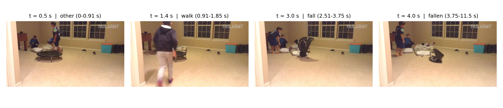
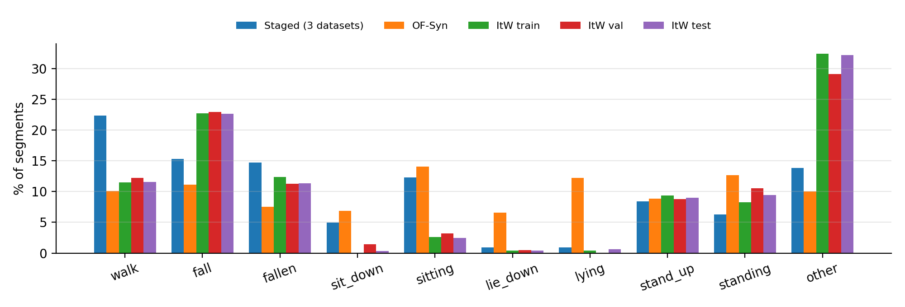
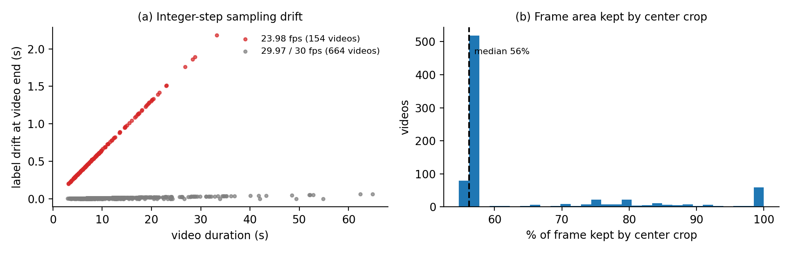
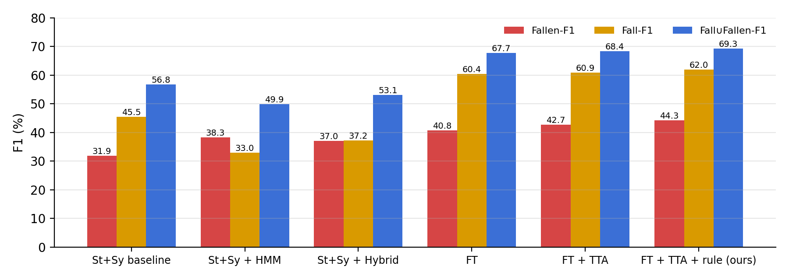
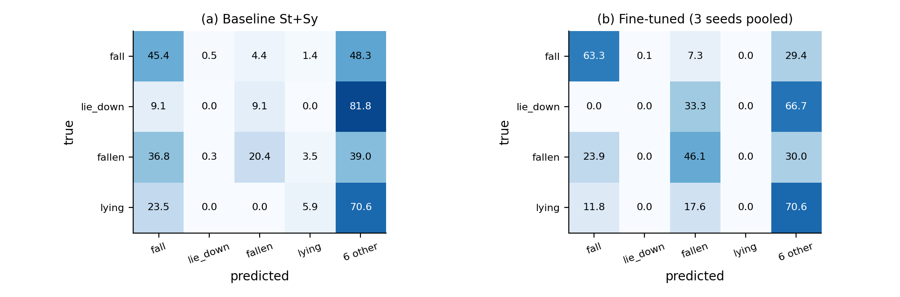
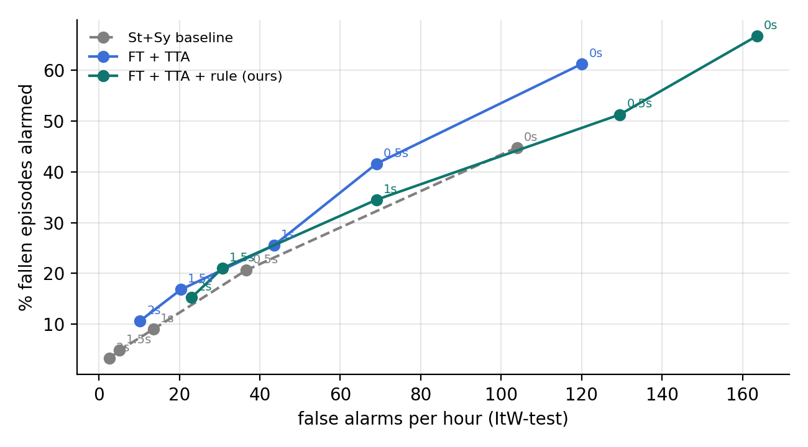
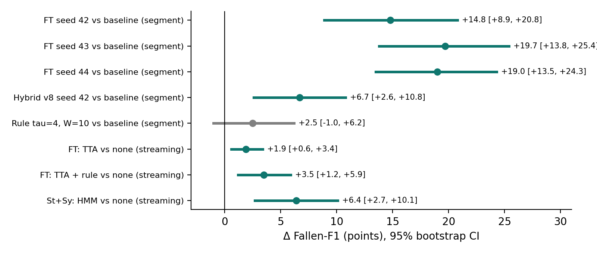

Phát hiện người đã ngã trong video: từ dữ liệu đến hệ thống thời gian thực
Kiểm tra dữ liệu, fine-tune mô hình và điều kiện hoá chuyển trạng thái trên benchmark OmniFall
Nhóm: Nguyễn Duy Quân (trưởng nhóm) · Phạm Tuấn Vỹ · Nghiêm Thị Thu Huyền · Vũ Hoàng Anh
Giảng viên hướng dẫn: Lương Trung Kiên
Hành trình báo cáo
Nội dung trình bày: bảy chặng
1Giới thiệubài toán, mục tiêu
2Tổng quannghiên cứu liên quan
3Dữ liệunguồn, xử lý, lỗi
4Phương phápkiến trúc 3 tầng
5Thực nghiệmhuấn luyện, cách chấm
6Kết quảsố liệu, thống kê
7Kết luậnhạn chế, hướng đi
Kết quả cuối
44.3 / 62.0 / 69.3
F1 đã ngã / đang ngã / gộp khi chạy như camera
So với hệ thống cũ
+12 – 17
điểm F1 trên cả ba chỉ số
Tốc độ
40–47 ms
mỗi bước suy luận trên RTX 3070
Chặng 1 · Giới thiệu
Thời gian nằm trên sàn sau cú ngã còn nguy hiểm hơn chính cú ngã
Lý do chọn đề tài
Ngã là nguyên nhân chấn thương hàng đầu ở người cao tuổi.
Người sống một mình có thể nằm hàng giờ không ai biết.
Camera RGB thường đã có sẵn, rẻ, không cần đeo thiết bị.
Mô hình học trên video dựng thường kém khi gặp tai nạn thật.
Mục tiêu
Phát hiện trạng thái “đã ngã”: người ngã và chưa đứng dậy.
Kiểm tra và sửa toàn bộ quy trình dữ liệu.
So sánh có hệ thống 4 cách cải thiện mô hình.
Đánh giá như camera thật và chạy được thời gian thực.
Chặng 1 · Phát biểu bài toán
Đầu vào là luồng video, đầu ra là xác suất 10 hành động mỗi 0.133 giây
Đầu vào / đầu ra
Input: video RGB, lấy mẫu 7.5 khung/giây.
Output: mỗi 0.133 s một phân phối xác suất trên 10 lớp, kèm cảnh báo khi “đã ngã” kéo dài.
Ràng buộc: chỉ dùng hình ảnh quá khứ, mỗi bước dưới 133 ms.
10 lớp hành động lõi của OmniFall
walk · đifall · đang ngãfallen · đã ngãsit_downsittinglie_downlyingstand_upstandingother
OmniFall có 16 lớp; 6 lớp mở rộng (quỳ, ngồi xổm…) chỉ có ở dữ liệu thật và tổng hợp. Nhóm theo giao thức 10 lớp lõi; dữ liệu dùng không có nhãn nào ngoài 10 lớp này.
Chỉ số chính: F1 “đã ngã”, F1 “đang ngã” và F1 gộp “đang ngã ∪ đã ngã”.
Chặng 2 · Tổng quan nghiên cứu
Các hướng tiếp cận liên quan
CNN phát hiện ngã
Phân loại khung hoặc clip ngắn trên bộ dàn dựng (Le2i, Multicam). Chính xác cao trong lab, kém khi ra thực tế.
Dữ liệu đa cảm biến
UP-Fall kết hợp camera và cảm biến đeo; người dùng phải đeo thiết bị.
Video Transformer
VideoMAE học tự giám sát bằng che khối không-thời gian; đặc trưng tổng quát tốt.
OmniFall
Gộp 8 bộ dàn dựng + 12.000 video tổng hợp, thêm 818 clip tai nạn thật OF-ItW để kiểm tra khả năng tổng quát.
Làm mượt theo thời gian
MS-TCN, HMM: kết hợp dự đoán từng khung với ma trận chuyển trạng thái.
Khoảng trống
Ít công trình đánh giá kiểu streaming nhân quả và kiểm tra lỗi trong quy trình dữ liệu.
Chặng 3 · Dữ liệu
5 nguồn, 13.268 video: học trên video dựng, kiểm tra trên tai nạn thật
Nguồn
Loại
Video
Segment
Giờ
Train / val / test
OF-Syn
Tổng hợp
12,000
19,228
16.88
9,600 / 1,200 / 1,200
GMDCSA24
Dàn dựng
160
458
0.36
75 / 48 / 37
Le2i
Dàn dựng
190
967
0.79
133 / 19 / 38
CAUCAFall
Dàn dựng
100
258
0.28
69 / 9 / 19 *
OF-ItW (OOPS)
Tai nạn thật
818
4,022
2.65
165 / 81 / 572
24.933 segment trước làm sạch, 24.928 sau làm sạch. * 3 video CAUCAFall không có trong split chính thức nên bị loại. Mọi lựa chọn làm trên 81 video val; 572 video test chỉ chấm một lần.
Chặng 3 · Khảo sát dữ liệu
Video thật khác hẳn video học: nhiều “đang ngã”, gần như không có “nằm xuống”

Một clip test: cú ngã kéo dài khoảng 1.2 s, trạng thái “đã ngã” gần 8 s.

Phân bố lớp theo miền dữ liệu.
Chặng 3 · Quy trình xử lý
12 bước xử lý, mỗi bước đều có số liệu kiểm tra
A · Nhãn
Gộp 5 nguồn
Xoá 5 dòng lỗi (4 end ≤ start, 1 trùng)
Kiểm tra split: không video trùng
Kiểm tra thời gian nhãn
Đếm chuyển trạng thái
B · Video
Đo fps từng video: 154 video 23.98 fps
Lấy mẫu theo đồng hồ 7.5 fps
Cắt trái / giữa / phải cho 242 video dọc
C · Đặc trưng
VideoMAE trích vector 768 chiều
Cố định cửa sổ đánh giá
Tăng cường dữ liệu khi huấn luyện
D · Thời gian thực
Tiền xử lý GPU: 2.9 ms/khung (CPU 7.2 ms)
Cosine 0.9998 so với CPU
98.7% dự đoán giống hệt
Chặng 3 · Lỗi phát hiện được
Hai lỗi tiền xử lý và một nguồn nhiễu đánh giá

(a) Lệch nhãn với cách lấy mẫu cũ. (b) Phần khung giữ lại khi cắt giữa.
Lỗi 1 · Lấy mẫu
Lấy 1 khung mỗi round(f/7.5): video 23.98 fps thành 8 fps nhưng gắn nhãn như 7.5 fps. 85 video lệch quá 0.5 s, nặng nhất 2.18 s.
Lỗi 2 · Cắt ảnh
Cắt giữa video dọc chỉ giữ 56% khung, người ngã có thể nằm ngoài vùng nhìn.
Nhiễu đánh giá
Cửa sổ ngẫu nhiên: cùng mô hình dao động 23.5–26.0 F1. Nhóm cố định cửa sổ.
Chặng 4 · Phương pháp
Kiến trúc 3 tầng: từ 16 khung hình đến một cảnh báo
Điểm val theo lr và L2-SP: tăng từ 54.2 lên 62.2, bão hoà từ 2×10⁻⁴.
Chặng 5 · Cách đánh giá
Hai cách chấm, streaming là giao thức chính vì giống camera thật
Theo segment (giao thức OmniFall)
Một dự đoán cho mỗi segment (2.804 segment test)
18 vector đặt giữa segment
Rò rỉ ranh giới: 92.3% segment liền kề khác nhãn, nên HMM đạt 51.3 nhưng không triển khai được
Streaming (giao thức chính)
Dự đoán mỗi 0.133 s, khoảng 31.000 bước, 1.17 giờ video
Chỉ dùng 18 vector quá khứ, so nhãn tại t − 2.2 s
Đo thêm báo động: 310 lần “đã ngã”, số báo động sai mỗi giờ
Chặng 6 · Kết quả chính
Hệ thống cuối vượt hệ thống cũ 12–17 điểm F1 khi chạy như camera
F1 đã ngã
44.3
+12.4 (cũ 31.9)
F1 đang ngã
62.0
+16.5 (cũ 45.5)
F1 gộp
69.3
+12.5 (cũ 56.8)
26.3→44.1
F1 đã ngã theo segment nhờ fine-tune
+3.5
F1 đã ngã từ TTA + quy tắc, KTC [+1.2, +5.9]
p ≤ 0.008
McNemar, cả 3 seed
41.6%
ca ngã được báo động (ngưỡng 0.5 s, trễ 2.6 s)
Chặng 6 · Kết quả streaming
Chỉ quy tắc trên mô hình fine-tune tăng cả ba chỉ số
Bộ phân loại
Hậu xử lý
Đã ngã
Đang ngã
Gộp
Gốc
Không
31.9
45.5
56.8
Gốc
HMM
38.3
33.0
49.9
Gốc
Hybrid
37.0
37.2
53.1
Fine-tune
Không
40.8
60.4
67.7
Fine-tune
TTA
42.7
60.9
68.4
Fine-tune
HMM
44.2
53.4
62.3
Fine-tune
Hybrid
45.7
56.1
66.2
Fine-tune
TTA + quy tắc
44.3
62.0
69.3

F1 streaming các hệ thống chính.
Chặng 6 · Phân tích lỗi
Fine-tune giảm nhầm “đã ngã” sang các lớp khác
Theo segment
Đã ngã
Gộp
Baseline ngẫu nhiên
24.7
55.1
Baseline cố định
26.3
55.9
Quy tắc τ=2, W=3
32.0
55.4
Hybrid v8
32.8
56.7
Fine-tune
44.1
66.0
Fine-tune + TTA
46.1
66.2
Recall “đã ngã” 20.4% → 46.1%; nhầm sang lớp khác 39.0% → 30.0%.

Recall theo hàng (%) cho các lớp liên quan đến ngã.
Chặng 6 · Báo động và kiểm định
Cải thiện có ý nghĩa thống kê, không phải do may mắn

~20 báo động sai/giờ: fine-tune bắt 16.8% ca ngã, hệ thống gốc khoảng 12%.

Bootstrap 10.000 lần theo video: 3 seed tăng 14.8–19.7 điểm, khoảng tin cậy không chứa 0.
Chặng 6 · Ứng dụng
Ứng dụng giám sát thời gian thực
40–47 ms
mỗi bước, dưới chu kỳ 133 ms
2.9 ms
tiền xử lý GPU / khung (CPU 7.2 ms)
0.9998
cosine đặc trưng GPU so với CPU
98.7%
dự đoán giống hệt bản CPU
Cách hoạt động
Nhận webcam hoặc file video; 3 luồng song song: đọc khung → trích đặc trưng → phân loại + quy tắc.
Hiển thị xác suất 10 lớp theo thời gian, bật cảnh báo khi “đã ngã” kéo dài quá ngưỡng.
Đã chạy thử trên file video; chưa thử với camera thật trong nhà.
Chặng 7 · Thảo luận
Ba bài học rút ra
01
Nút thắt là bộ phân loại
Khi mô hình còn nhầm “đã ngã”, mọi prior thời gian chỉ đổi lỗi này lấy lỗi khác.
02
Dữ liệu đúng miền rất quý
Chỉ 165 clip thật, cùng tăng cường và chọn mô hình cẩn thận, gần gấp đôi F1 “đã ngã”.
03
Cách đánh giá quyết định kết luận
Chấm theo segment ưu ái phương pháp khai thác ranh giới nhãn; streaming mới phản ánh triển khai.
Chặng 7 · Kết luận
Kết luận, hạn chế và hướng phát triển
Kết luận
Sửa dữ liệu + fine-tune trên clip thật + quy tắc không cần huấn luyện cho hệ thống triển khai tốt nhất: 44.3 / 62.0 / 69.3, hơn hệ thống cũ 12–17 điểm, chạy thời gian thực.
Hạn chế
Chưa trích lại đặc trưng huấn luyện nền (dữ liệu cũ đã xoá)
Chỉ có 3/8 bộ dàn dựng
Tập val nhỏ (46 segment “đã ngã”)
Báo động sai đo trên clip internet ngắn
Hướng phát triển
Trích lại đặc trưng, huấn luyện chung 3 miền
Huấn luyện trên cửa sổ nhân quả
Cắt ảnh theo người phát hiện được
Hiệu chỉnh ngưỡng trên camera trong nhà
Quản lý dự án
Phân công và kế hoạch thực hiện
Công việc
Phụ trách
Thời gian
Trạng thái
Đọc paper, code, benchmark OmniFall
Nguyễn Duy Quân
15/09 – 21/09
Xong
Tổng quan tài liệu và bộ dữ liệu
Phạm Tuấn Vỹ
15/09 – 24/09
Xong
Kiểm tra và làm sạch nhãn (bước 1–5)
Phạm Tuấn Vỹ
22/09 – 05/10
Xong
Kiểm tra video, lấy mẫu, cắt ảnh (bước 6–8)
Nghiêm Thị Thu Huyền
29/09 – 12/10
Xong
Trích đặc trưng, cố định đánh giá (bước 9–10)
Nghiêm Thị Thu Huyền
06/10 – 19/10
Xong
Nghiên cứu quy tắc / HMM / hybrid
Nguyễn Duy Quân
13/10 – 26/10
Xong
Fine-tune và dò 225 cấu hình
Nguyễn Duy Quân
20/10 – 09/11
Xong
Đánh giá streaming, báo động, bootstrap
Vũ Hoàng Anh
10/11 – 16/11
Xong
Ứng dụng thời gian thực
Vũ Hoàng Anh
10/11 – 23/11
Xong
Báo cáo, slide, kịch bản thuyết trình
Cả nhóm
17/11 – 30/11
Xong
Tài liệu tham khảo
Tài liệu tham khảo chính
OmniFall: benchmark phát hiện ngã thống nhất từ dữ liệu dàn dựng, tổng hợp và thật (Hugging Face: simplexsigil2/omnifall).
Z. Tong et al., “VideoMAE: Masked autoencoders are data-efficient learners for self-supervised video pre-training,” NeurIPS, 2022.
D. Epstein, B. Chen and C. Vondrick, “Oops! Predicting unintentional action in video,” CVPR, 2020.
J. C. Eraso Guerrero et al., “Dataset for human fall recognition in an uncontrolled environment (CAUCAFall),” Data in Brief, 2022.
E. Alam et al., “GMDCSA-24: A dataset for human fall detection in videos,” Data in Brief, 2024.
Y. A. Farha and J. Gall, “MS-TCN: Multi-stage temporal convolutional network for action segmentation,” CVPR, 2019.
L. R. Rabiner, “A tutorial on hidden Markov models and selected applications in speech recognition,” Proc. IEEE, 1989.
A. Vaswani et al., “Attention is all you need,” NeurIPS, 2017.
X. Li, Y. Grandvalet and F. Davoine, “Explicit inductive bias for transfer learning with convolutional networks,” ICML, 2018.
B. Efron and R. J. Tibshirani, An Introduction to the Bootstrap, Chapman & Hall, 1993.
Danh sách đầy đủ 23 tài liệu có trong báo cáo Word.